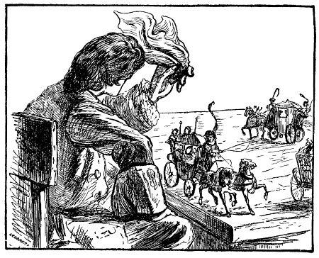

Chương 6
Nhân dân Lilliput - Khoa học, luật pháp và phong tục - Giáo dục, thiếu nhi - Tác giả sống như thế nào ở xứ sở này - Tác giả bảo vệ một bà phu nhân.
Tôi có ý định dành mọi việc miêu tả xứ sở này trong một tác phẩm khác, nhưng tôi vui lòng thỏa mãn các bạn đọc một phần. Những người Lilliput cao gần sáu inch, súc vật, cây cỏ có tỉ lệ tương ứng. Chẳng hạn, ngựa và bò to khỏe nhất do được từ bốn đến năm inch, cừu độ một inch rưỡi, ngỗng thì bằng con chim sẻ, và cứ như vậy đến những con vật nhỏ li ti, mắt tôi không trông thấy. Nhưng tự nhiên phú cho người Lilliput con mắt tinh tường. Để chứng minh con mắt rất tinh của họ, tôi đã thấy một người làm bếp vặt lông một con chim cắt to chưa bằng một con ruồi, và một thiếu nữ xâu một cái kim mắt tôi không trông thấy, sợi chỉ lụa, mắt tôi cũng không trông thấy. Cây to nhất cao độ bảy foot, đó là những cây trong vườn thượng uyển, bàn tay tôi nắm lại vừa cao bằng ngọn cây. Cây cối khác có tỉ lệ tương ứng. Nhưng thôi, để bạn đọc tưởng tượng lấy.
Bây giờ tôi nói đôi chút về khoa học Lilliput đã phát triển trong mọi ngành, từ nhiều đời nay. Nhưng chữ viết của họ rất đặc biệt. Không phải từ trái sang phải như cách viết của người châu Âu, không phải từ phải sang trái như cách viết của người Ả-rập, cũng không phải từ trên xuống dưới như của người Trung Quốc, mà chéo từ góc này sang góc khác như cách viết của các bậc quý phái ở nước Anh.
Người Lilliput chôn người chết ngược đầu xuống dưới đất, bởi vì họ tin rằng một vạn một nghìn tuần trăng sau, tất cả mọi người chết sẽ sống lại. Trong thời gian ấy, trái đất (họ tưởng trái đất dẹt) sẽ quay ngược trở lại, và như vậy, những người chết sẽ đứng sẵn, chờ ngày tái sinh. Những người có học thức thấy lòng tin ấy là phi lý, nhưng tục lệ vẫn tồn tại để khỏi đi ngược lại ý kiến của kẻ bình thường.
Một số luật pháp và phong tục của nước này rất lạ. Có lẽ tôi sẽ cố gắng bảo vệ nó, nếu nó trái ngược hẳn với luật pháp và phong tục nơi Tổ quốc thân yêu của tôi. Chỉ mong sao nó được thực hiện một cách nghiêm chỉnh. Trước hết tôi xin nói đến là pháp luật đối với những kẻ vu khống. Ở nước này, tội chống lại nhà nước bị trừng phạt nặng nhất. Nhưng nếu bị cáo chứng minh được mình vô tội, người tố cáo tức khắc bị xử tử. Bị cáo sẽ được bồi thường gấp bốn lần. Số tiền bồi thường lấy ở của cải, ruộng đất của người tố cáo, vì số thời giờ đã mất, vì sự nguy hiểm đe dọa vì đã phải chịu khổ cực trong nhà giam và vì đã tiêu tốn trong khi chạy chọt. Nếu người tố cáo không đủ tiền bồi thường sẽ lấy của cải của nhà vua bù đắp. Vua công khai cho bị cáo một chứng cớ nào đó về sự ưu đãi của vua và người ta công bố cho mọi người khắp thành phố biết người đó là vô tội.
Người Lilliput coi gian lận là một tội nặng hơn tội trộm cắp, và ít khi không trừng trị bằng tử hình. Họ khẳng định rằng sự thận trọng và tính cảnh giác của mọi người bình thường đủ để bảo vệ của cải, chống lại trộm cắp, nhưng người ngay thật không thể tự bảo vệ chống lại kẻ lừa lọc. Trong thực tế, luật cung cầu tất yếu liên quan đến người mua kẻ bán và lòng tin lẫn nhau, nếu sự gian lận được tha thứ và cho phép, nếu không có luật pháp trừng trị, thì bao giờ người lương thiện cũng bị lừa lọc và kẻ lưu manh có lợi. Tôi còn nhớ một lần đã can thiệp với vua để bênh vực một kẻ phạm pháp đã lừa một ông chủ, lấy một số tiền lớn của chủ giao cho rồi bỏ trốn. Để giảm tội của hắn, tôi thưa với vua rằng, dù sao, đó cũng chỉ là tội lợi dụng lòng tin của kẻ khác. Vua cho đó là một lý lẽ quái gở, bởi vì chính lý lẽ ấy làm tội nặng thêm, mà tôi lại viện ra để xin giảm tội cho bị cáo. Tôi chẳng biết đáp lại làm sao ngoài cách biện bạch rằng ở mỗi nước đều có những tập quán riêng, nhưng thú thực trong thâm tâm, tôi rất lấy lâm xấu hổ.
Thông thường, chúng ta đều coi nhưng việc khen thưởng và trừng phạt là hai cái trục của một chính quyền, nhưng chưa bao giờ và chưa ở đâu tôi thấy châm ngôn ấy được thực hiện, trừ ở Lilliput. Bất kỳ ai chứng minh được mình đã nghiêm chỉnh tuân theo mọi luật pháp của xứ sở trong bảy mươi ba tuần trăng, đều có quyền hưởng một số quyền lợi, nhiều ít tùy theo dòng dõi và chức vụ, với một số tiền tương đương trích ở một quỹ đặc biệt. Người đó gọi là snilpall, tức là hợp pháp, kèm theo tên mình, nhưng không cha truyền con nối. Người Lilliput cho rằng muốn cho mọi người tuân theo pháp luật mà chỉ có trừng phạt, không có khen thưởng, là một sai lầm. Do nguyên lý ấy mà hình ảnh của công lý được biểu hiện trong các tòa án bằng sáu con mắt, hai mắt ở đằng trước, hai mắt ở đằng sau, và mỗi con mắt ở mỗi bên - tượng trưng của sự chú ý toàn diện, với một túi vàng ở tay phải, một thanh kiếm ở tay trái, để cho mọi người thấy rõ rằng công lý thiên về khen thưởng hơn là trừng phạt.
Trong việc lựa chọn những người đảm nhiệm công việc của quốc gia, người Lilliput coi trọng đạo đức hơn là tài năng. Bởi vì họ nghĩ rằng, không ai có thể không cần đến chính phủ nên một trí tuệ bình thường có thể làm được bất cứ nhiệm vụ nào. Thượng đế không bao giờ có ý muốn biến công việc trị quốc thành một điều bí ẩn, mà chỉ một vài thiên tài hiếm có mới hiện được. Mà những thiên tài ít khi sản sinh được lấy ba người trong cùng một thời đại. Người Lilliput cho rằng sự thật, sự công bằng, tính ôn hòa và những đạo đức ấy trong thực tiễn, thêm vào đó kinh nghiệm và thiện ý: là đủ tư cách để phụng sự quốc gia, trừ khi nó đòi hỏi một trình độ học vấn cần thiết. Họ thấy rằng tài năng không thể bù đắp được cho người thiếu đạo đức, nên họ không giao nhiệm vụ quốc gia vào bàn tay nguy hiểm của những kẻ đó. Và chí ít thì nhưng lỗi lầm do sự dốt nát gây nên, nhưng có thiện ý, không bao giờ tạo ra những kết quả ảnh hưởng đến quyền lợi chung, như hành động của một người xấu xa nhưng rất có tài tổ chức để che giấu, bảo vệ những hành động tội ác của mình.
… Nhắc đến những luật pháp đã kể trên hoặc sẽ kể dưới đây, đó là tôi nói đến những quy chế cổ xưa và bỏ qua sự suy đồi đáng quyền rủa mà dân tộc này mỗi ngày một sa vào, theo lẽ tự nhiên của bàn chất thoái hóa của loài người. Cái tục lệ đáng ghét là nhảy múa trên dây để chiếm những địa vị quan trọng trong triều, hoặc nhảy qua cái gậy và bò toài dưới đất để được hưởng quyền ưu đãi và phẩm tước, bạn đọc nên hiểu là những cách thức ấy mới được ông nội của nhà vua hiện nay thực hiện lần thứ nhất, và nó chỉ phát triển khi ngày càng có nhiều phe phái.
Sự vô ơn là tội nặng nhất đối với người Lilliput. Lịch sử cho ta biết ở nhiều nước khác cũng vậy. Họ lập luận như sau: những người đối đãi không ra gì với ân nhân của mình, thì chắc hẳn sẽ là kẻ thù chung của những người khác, là những người sẽ không nhận được sự giúp đỡ nào hết. Vì vậy, kẻ vô ơn không đáng sống.
Cách xem xét quan hệ cha con khác hẳn cách xem xét của chúng ta. Quan hệ nam nữ vốn dựa trên cơ sở một quy luật của tự nhiên để phát triển nòi giống. Người Lilliput cho rằng đàn ông và đàn bà sống với nhau chẳng qua cũng như những loài sinh vật khác, chỉ nhằm mục đích phát triển nòi giống... Với những lập luận ấy và những lập luận khác tương tự như vậy, đưa người ta đến ý nghĩ cho rằng cha mẹ không cần chăm lo, dạy dỗ con cái. Thành phố nào cũng có những trung tâm giáo dục con trẻ. Các bậc cha mẹ - trừ thợ thuyền và dân cày - phải đưa con cái mình đến đó để người ta nuôi nấng, dạy dỗ, khi trẻ tròn hai mươi trăng tròn, tức là khi các cháu biết nghe lời. Có nhiều loại trường dành cho con trai và con gái, và tùy theo dòng dõi. Thầy giáo, cô giáo lành nghề trong việc đào tạo trẻ em có lối sống phù hợp với hoàn cảnh gia đình và cha mẹ, với năng khiếu và khuynh hướng của từng đứa trẻ. Trước hết, tôi nói đến những trung tâm giáo dục con trai, rồi đến những trung tâm giáo dục con gái.
Trường học đào tạo thiếu nhi thuộc gia đình quý tộc có những giáo viên nghiêm túc và uyên bác, có học thức, và có nhiều trợ lý giúp đỡ. Quần áo và thức ăn đơn giản nhưng đầy đủ. Họ dạy cho các cháu biết thế nào là danh dự, công bằng, dũng cảm, khiêm tốn, độ lượng, tôn giáo và lòng yêu nước. Lúc nào các cháu cũng hoạt động, trừ những thời gian rất ngắn dành cho bữa ăn và giấc ngủ. Có hai giờ giải trí dành cho việc tập thể dục. Người hầu đàn ông mặc quần áo cho các cháu đến khi các cháu lên bốn tuổi, sau đó, các cháu tự mặc lấy không phân biệt dòng dõi thế nào. Giờ chơi các cháu tự tập lại thành từng nhóm lớn, nhỏ tùy thích, và bao giờ cũng có thầy giáo hay trợ lý coi sóc. Thành thử, các cháu tránh được việc tiếp xúc thói hư tật xấu mà trẻ em nước chúng ta không tránh được. Mỗi năm, cha mẹ chỉ được đến thăm con hai lần. Mỗi lần không quá một giờ. Cha mẹ không được hôn con lúc đến trường cũng như lúc đi, bao giờ cũng có một thầy giáo giám sát các cuộc gặp mặt ấy, để cấm tiếng thì thầm thân ái giữa hai bên, cấm cha mẹ cho con đồ chơi, quà bánh hoặc một thứ gì khác. Nếu cha mẹ không đóng tiền cho con, sẽ có nhân viên nhà nước thu số tiền theo quy định.
Những trường dành cho con cái gia đình trung lưu - người buôn bán, thương gia và thợ thủ công - cũng được tổ chức theo những nguyên tắc trên, chỉ khác một điều là ở các trường thương mại, trẻ con tập sự đến năm mười một tuổi, còn ở các trường khác, việc tập sự kéo dài cho đến năm mười lăm tuổi - tương đương với tuổi hai mươi mốt ở nước chúng ta. Ở ba năm cuối cùng, những điều bó buộc ngày càng đỡ ngặt nghèo hơn.
Trong những trường dạy các cháu gái, các cháu dòng dõi quý tộc được nuôi nấng cũng như các cháu trai, chỉ khác một điều là những người hầu gái mặc quần áo cho các cháu, nhưng bao giờ cũng do thầy giáo hay trợ lý coi sóc, cho đến khi năm tuổi, các cháu biết mặc quần áo lấy. Nếu các bà vú nuôi tự ý kể cho các cháu gái nghe những chuyện phi lý hay rùng rợn, hoặc giở những trò khỉ ra như thường thấy ở các chị hầu phòng nước chúng ta thì sẽ bị đòn ba lần, công khai, cho mọi người ở thành phố đều biết, bị tù một năm và bị đày đến một nơi khổ nhất của xứ sở. Vì vậy, cũng như các em trai, các em gái thấy xấu hổ nếu bị coi là hèn nhát hoặc hư thân. Các cô gái này đều khinh bỉ sự ngụy biện và trang sức bề ngoài, nên họ chỉ lo lắng làm sao sống cho lịch sự và sạch sẽ. Tôi không thấy có gì khác biệt lắm trong sự giáo dục con trai và con gái, con gái tập thể dục nhẹ nhàng hơn cung cách làm việc nội trợ được dạy bảo và trình độ học vấn cũng thấp hơn. Họ cho rằng một người đàn bà quý tộc không thể trẻ mãi suốt đời nên bao giờ cũng cần phải là một người biết điều và dễ mến. Khi các cô gái đến tuổi mười hai - là đến tuổi lấy chồng - các cô trở về gia đình với cha mẹ hoặc người đỡ đầu và ít khi những cuộc chia tay giữa cô gái và bạn bè của cô không có nước mắt. Còn cha mẹ hoặc người đỡ đầu thì rất biết ơn những thầy giáo đã dạy dỗ con mình.
Ở những trường dành cho các cháu gái địa vị xã hội thấp hơn, các cháu được học tập tất cả mọi việc hợp với giới tính và tùy theo tầng lớp xã hội. Những cháu nào phải đi học nghề thì dời trường từ năm lên bảy, còn các cháu khác được giữ lại đến năm mười một tuổi.
Mỗi gia đình có con gửi đến trường, ngoài tiền ăn ở đóng hằng năm, được quy định thấp đến mức tối thiểu, còn phải đóng cho trường một phần nhỏ thu nhập hằng tháng, dành dụm làm của hồi môn cho con. Như vậy, luật pháp hạn chế cả các món chi tiêu của các bậc cha mẹ. Người Lilliput quan niệm rằng, không gì bất công hơn là đẻ con ra mà lại bắt nhà nước nuôi nấng, lấy cớ là cần phải thỏa mãn những nhu cầu của mình. Những người quý tộc gửi mỗi đứa con phải để một số tiền bảo đảm, nhiều ít tùy theo chức vị. Quỹ này được quản lý rất tiết kiệm và công bằng.
Con cái thợ thuyền và dân cày ở nhà với cha mẹ. Nghề của các cháu sau này là cày cấy ruộng vườn, nên đối với họ, sự giáo dục là không cần thiết lắm. Có bệnh viện từ thiện dành cho người nghèo, già cả, ốm đau, nên ở xứ này không hề có ăn mày.
Và bây giờ, có lẽ bạn đọc tò mò muốn biết cuộc sống hằng ngày của tôi ở nước này như thế nào. Vốn tôi là người ưa những công việc chân tay, vả lại do nhu cầu đòi hỏi, tôi đã lấy những cây to nhất trong vườn thượng uyển để làm một cái bàn và một cái ghế khá tốt. Hai trăm cô thợ khâu may áo sơ-mi và khâu những khăn trải giường, khăn bàn cho tôi bằng thứ chỉ dai nhất, cứng nhất có thể tìm thấy ở đây. Các cô phải khâu nhiều lớp vải xếp lên nhau, bởi vì thứ vải dày nhất còn mỏng hơn the ở nước chúng ta. Một tấm vải thường rộng ba inch, dài ba foot. Tôi nằm xuống đất cho các cô đo để may áo. Một cô đứng trên cổ tôi, một ở giữa thân, mỗi cô cầm một đầu cái dây thừng cho cô thứ ba lấy thước đo. Sau đó các cô đo ngón tay cái của tôi, thế là xong. Các cô làm một con tính, tính được vòng cổ tay, dài bằng hai ngón tay cái. Ba trăm thợ may được dùng vào vệc may quần áo cho tôi, họ đo bằng cách khác. Tôi quỳ xuống đất, họ bắc thang cao đến cổ. Một người trèo lên thang, dùng dây dọi thả từ cổ xuống đất. Thế là được chiều dài áo khoác. Còn tôi tự đo lấy vòng thân và cánh tay. Việc may quần áo làm ngay ở nhà tôi (bởi vì dù là nhà to nhất của họ, cũng không chứa nối bộ quần áo này), nhìn bộ quần áo chẳng khác gì những mảnh vá chi chít mà các ba phụ nữ như ở bên Anh vẫn thường làm, chỉ khác một điều là những mảnh vá này đồng màu.

Nấu ăn cho tôi, là ba trăm đầu bếp ở với gia đình họ trong những túp lều dựng quanh nhà tôi. Mỗi người cung cấp hai đĩa thức ăn. Tôi cầm hai mươi người đặt lên bàn, khoảng một trăm người đứng ở dưới đất, tay cầm đĩa thức ăn, hoặc khiêng những thùng rượu và đồ uống. Những người hầu bàn dùng dây kéo lên rất khéo, như thể chúng ta kéo nước ở giếng. Mỗi đĩa thức ăn, tôi chén vừa đủ một miếng, và mỗi thùng rượu - một hớp kha khá. Thịt cừu không ngon bằng thịt cừu ở nước chúng ta, nhưng thịt bò thì ngon tuyệt. Một lần, tôi được một miếng lườn to kếch sù, ăn đến ba miếng mới hết, nhưng những miếng như vậy rất hiếm. Ngỗng và gà tây cũng mỗi con một miếng ngon lành, phải thú thật rằng thịt ngỗng và gà tây ngon hơn ở nước chúng ta. Còn những con chim thì tôi lấy đầu dao xâu hai mươi hoặc ba mươi con một lúc.
Biết cách sống của tôi như vậy, một hôm đức vua đề nghị tôi vui lòng (vua có nhã ý nói như vậy) để cho vua đến dự bữa cơm với tôi, có cả hoàng hậu, hoàng tử và công chúa nữa. Cả đoàn đến, tôi bưng tất cả ngồi lên bàn của tôi, kể cả đội cận vệ, Flimnap: quan đại thần giữ kho bạc, cũng có mặt, tay cầm cái gậy trắng ông ta nhìn tôi chẳng có thiện cảm gì cả, nhưng tôi mặc kệ. Tôi ăn nhiều hơn mọi ngày để làm vinh dự cho nước tôi và cũng làm cho họ phải khâm phục. Tôi có những lý do riêng để tin rằng cuộc đi thăm này của nhà vua là dịp để Flimnap làm hại tôi. Ông tổng trưởng này vẫn là kẻ thù giấu mặt của tôi, mặc dù bề ngoài ông ta vẫn tỏ ra ân cần niềm nở khác với cái tính ít nói tự nhiên của ông. Ông ta trình lên đức vua tình hình nguy ngập của kho bạc, khiến ông ta đã phải vay tiền với lãi suất cao, rằng những phiếu công khố đã sụt giá tới chín phần trăm và tôi đã tiêu tốn của nhà vua tới một triệu rưỡi sprug (đồng tiền vàng lớn nhất, to bằng hạt tấm), và tốt hơn hết nhà vua cần phải tìm cách tống cổ tôi đi.

Ở đây tôi phải bảo vệ danh dự cho một vị phu nhân đáng kính đã vì tôi mà trở thành một nạn nhân vô tội. Vì những lời gièm pha độc địa, ông tổng trưởng sinh ra ghen tuông. Ông ta tưởng vợ ông mê tôi và ở cung đình người ta phao tin là bà ta lén lút đến nhà tôi chơi. Tôi trịnh trọng tuyên bố rằng đó chỉ là lời vu khống hèn hạ nhất, hoàn toàn không có cơ sở gì, chỉ có điều là bà ta thích đối xử tự do, thân mật với tôi, điều đó chẳng có gì là tội lỗi. Tôi công nhận bà năng đến chơi nhà lôi, nhưng đến công khai, bao giờ trong xe ngựa cũng có ít nhất là ba người: cô em, con gái và một bạn gái. Tôi yêu cầu những người hầu của tôi khẳng định rằng chưa bao giờ họ thấy một xe ngựa đến cổng nhà tôi mà không biết đó là xe của ai. Những khi có khách, được tin báo, tôi ra ngay cổng và sau lời chào hỏi, tôi nhấc cả xe và ngựa lên tay, cẩn thận đặt lên bàn, bàn có quây một cái rào hình tròn, cao năm inch để đề phòng tai nạn. Nhiều khi tôi có tới cả bốn người và ngựa trên bàn, tôi ngồi ghế, ngả đầu xuống phía khách. Khi tôi nói chuyện với nhóm khách này thì xà ích ngoan ngoãn đưa nhóm khách khác dạo quanh bàn. Nhiều buổi chiều, tôi đã được vui vẻ tiếp khách như vậy. Tôi thách ông tổng trưởng và hai kẻ đưa tin của ông ta (tôi cứ gọi tên ra ở đây, rồi ra sao thì ra) là Clustril và Drunlo đưa ra bằng chứng rằng có người lén lút đến nhà tôi - thì ông bí thư Reldresal, được đức vua đặc phái đến, như tôi đã kể bên trên. Tôi sẽ không kể lể chi tiết việc này nếu đó không phải là câu chuyện danh dự của một bà phu nhân quý phái có tên tuổi. Mặc dù tôi là một Nardac, mà ông tổng trưởng kia mới chỉ là một glumglum, như mọi người đều biết, tức là còn kém tôi một bậc - cũng như từ tước công đến tước hầu ở nước Anh. Tuy nhiên tôi công nhận là ông ta có thế lực hơn tôi vì chức vụ nắm tiền bạc của nhà nước. Những tin đồn nhảm ấy khiến ông ta khổ sở vì ghen tuông và căm thù tôi. Ít lâu sau đó, ông ta đã nhận ra là mình đã bị người ta lừa nên đã làm lành với vợ, song ông ta không còn tin ở tôi nữa. Sau đó, tôi nhận thấy cả nhà vua cũng ngày một xa lánh tôi, bởi vì sự thật, ngài đã bị ông tổng trưởng chi phối.